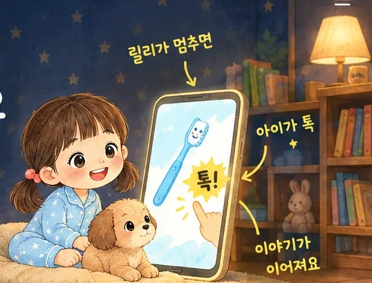
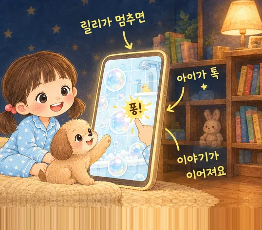
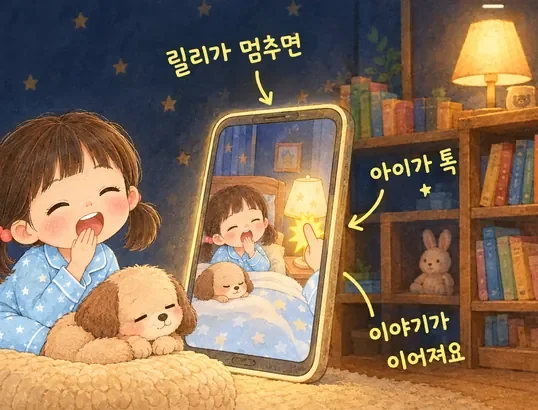
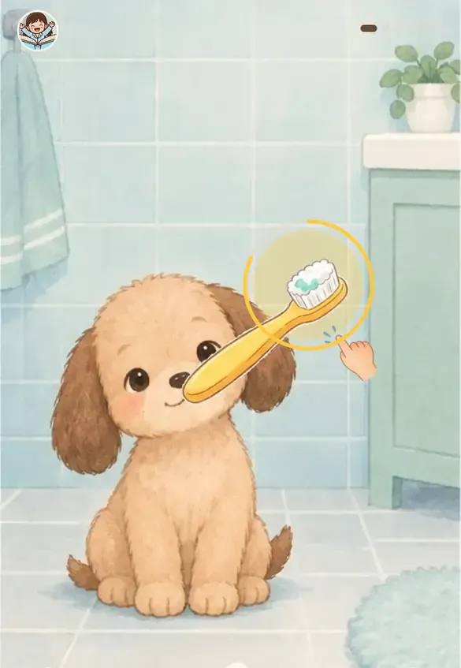
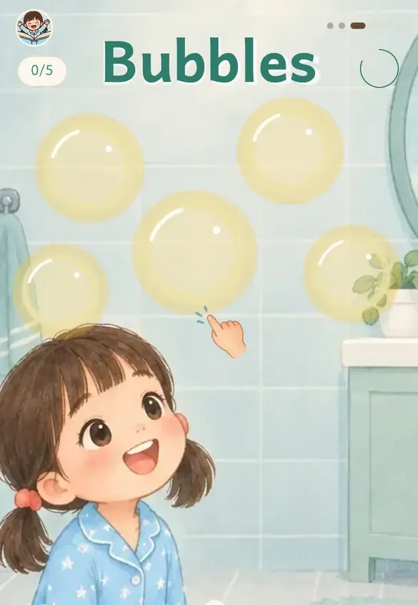
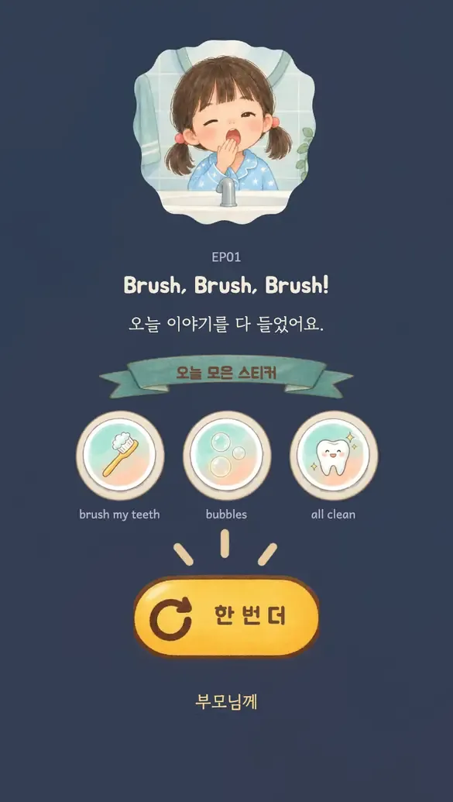
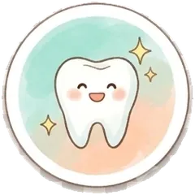
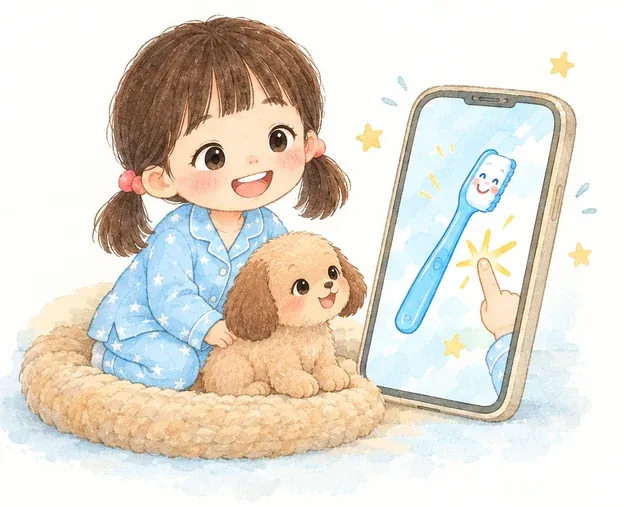

하루 습관마다 한 편씩, 새 이야기가 계속 더해져요
릴리가 묻고 기다리면, 아이가 그림을 눌러 이야기를 이어 가요.



8초가 지나면 릴리가 대신 넘어가요. 틀리는 일은 없어요.
3번 이어 듣기를 켜 두면 연달아 들려줘요.
릴리가 기다리면 아이가 직접 눌러야 다음 장면이 나와요.
양치할 때 부모님이 Brush my teeth!
한마디면 들은 말이 생활로 이어져요.

그다음부터는 영어만 들려 뜻을 스스로 붙잡게 해요.

로그인 없이 바로 시작해요
무료로 들어보기